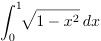

Monte Carlo Estimation
The program estimates the area under the curve given by

with x between 0 to 1 using the Monte Carlo hit and miss method.

Imagine a
rectangle of height
h, width
b - a, and area A = h(b - a) such that the function f(x) is within the
boundaries of the rectangle. Generate
n pairs of random numbers xi and
yi with a ≤ xi ≤ b and 0 ≤ yi ≤ h. The fraction of points xi, yi that satisfy the condition yi
≤ f(xi) is an estimate of the ratio of the integral of f(x) to the
area of the rectangle. Hence, the estimate
Fn in the hit or miss method is given by

where ns is the number of points below the curve and
n is the total number of points.
- Calculate the exact answer by doing the following integral analytically:

- Determine the error (the magnitude of the deviation from the exact answer) for Monte Carlo runs of n = 104 and 105, 106, and 107.
Plot the log of the error versus log n. Does the error decrease with increasing n on the average?
- Estimate the integral using n = 100 points. Repeat for a total of 10 trials using different random number seeds each time. The easiest way to do so is to press the Reset button and then press the Calculate button. The default is for the program to choose a new seed each time based on the time.
Is the magnitude of the variation of your values of the same order as the error between the average value and the exact
value? For a large number of trials, the error is estimated from the standard error of the mean, which approximately equals the
standard deviation divided by the square root of the number of trials.
- Harvey Gould, Jan Tobochnik, and Wolfgang Christian, Introduction to Computer Simulation Methods, Addison-Wesley (2006), pp. 421–424.
Updated 27 February 2007.